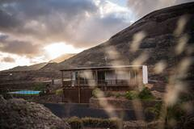
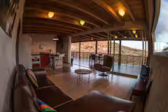
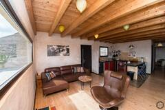
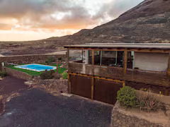
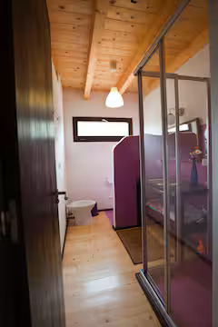
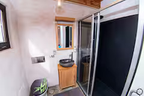
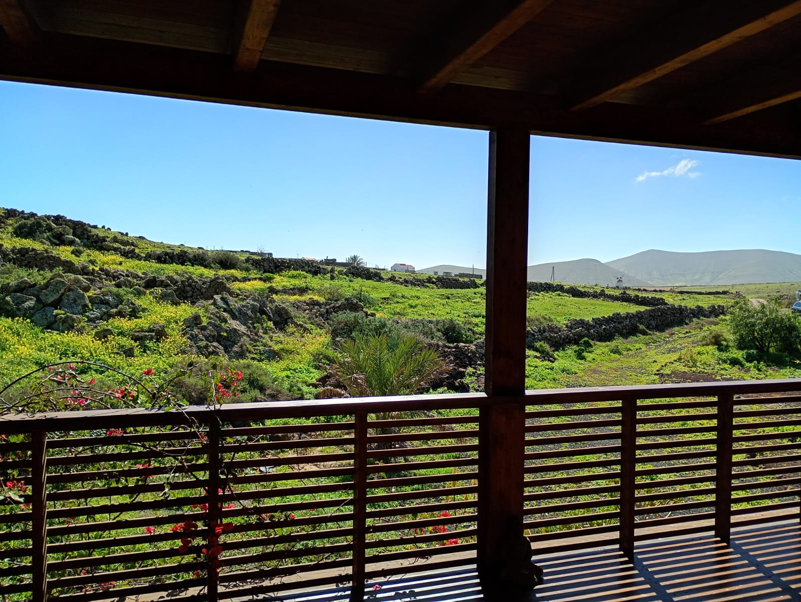
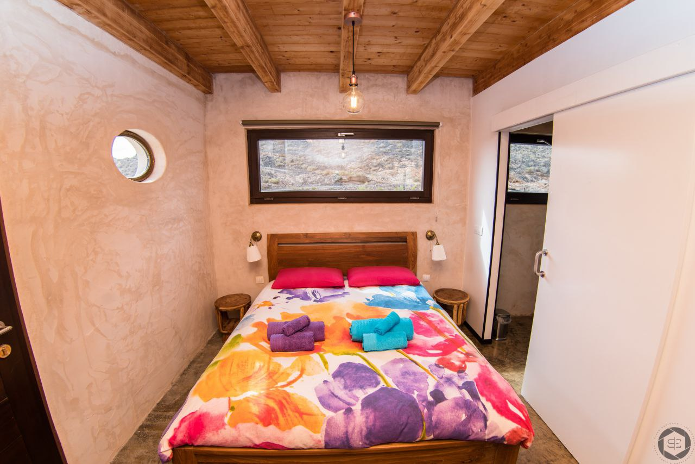

Check Availability Direct (WhatsApp)
 Pay with Bitcoin
Pay with Bitcoin
Direct booking available via WhatsApp 💬
Eco Holiday Villa in Fuerteventura
⭐ 190+ Airbnb Reviews
 Pay with Bitcoin
Pay with Bitcoin
Direct booking available via WhatsApp 💬








Eco Villa Tayu is a sustainable holiday villa located in Villaverde, in the north of Fuerteventura. Perfect for guests looking for peace, nature and privacy. The villa accommodates up to 4 guests and is close to Lajares, Tindaya and Puerto del Rosario. Eco Villa Tayu is also just a short drive from Corralejo Natural Park, the beaches of El Cotillo and the charming village of Lajares.
⭐⭐⭐⭐⭐ Rated 4.8 / 5 from 190+ verified Airbnb guests
"Fantastic villa, very peaceful location and beautiful pool. Perfect stay!"
"Wonderful house in Villaverde, very clean and great communication with the host."
"Perfect place to relax in Fuerteventura. Highly recommended!"
Eco Villa Tayu is located in Villaverde in the north of Fuerteventura, close to some of the most beautiful places on the island.
🏜 Corralejo Dunes Natural Park – about 15 minutes by car, famous for its white sand dunes and turquoise water.
🏖 El Cotillo Beach – about 20 minutes away, known for its beautiful lagoons and sunsets.
🏄 Lajares – a charming village with restaurants, cafés and local markets.
⛰ Tindaya – a traditional village famous for the sacred Tindaya mountain.
🏙 Puerto del Rosario – the capital of Fuerteventura with shops, restaurants and the ferry port.
🌅 North Fuerteventura is perfect for surfing, cycling, hiking and relaxing holidays in nature.
Eco Villa Tayu is a luxury eco villa with private pool located in Villaverde, Fuerteventura in the Canary Islands.
The villa is close to Corralejo dunes and El Cotillo beaches and offers a peaceful eco-friendly holiday experience in Fuerteventura with a private pool and nature views.
Eco Villa Tayu is an ideal holiday villa in Fuerteventura for guests looking for nature, privacy and a private pool near Corralejo and El Cotillo.
Telefon: +34 669 48 02 43
Email: info@ecovillatayuholidayfuerteventura.com
Alternative availability on Booking.com Booking.com